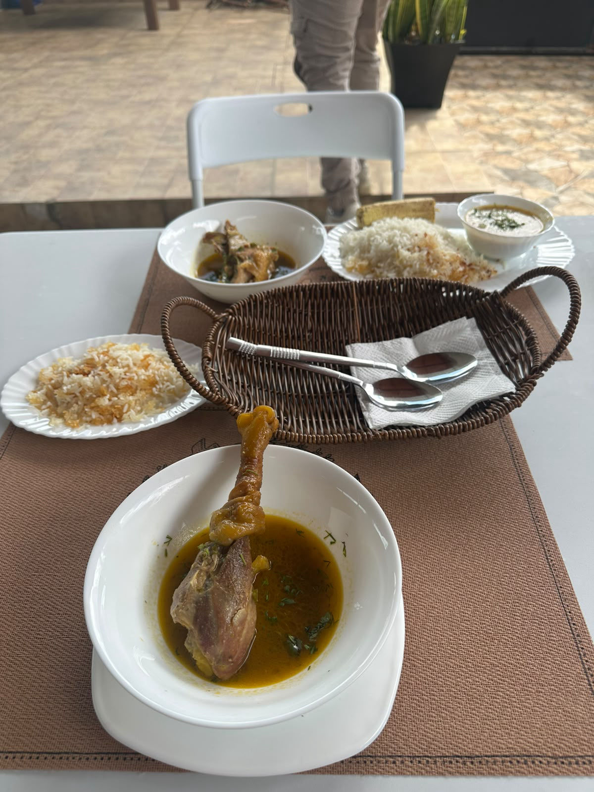
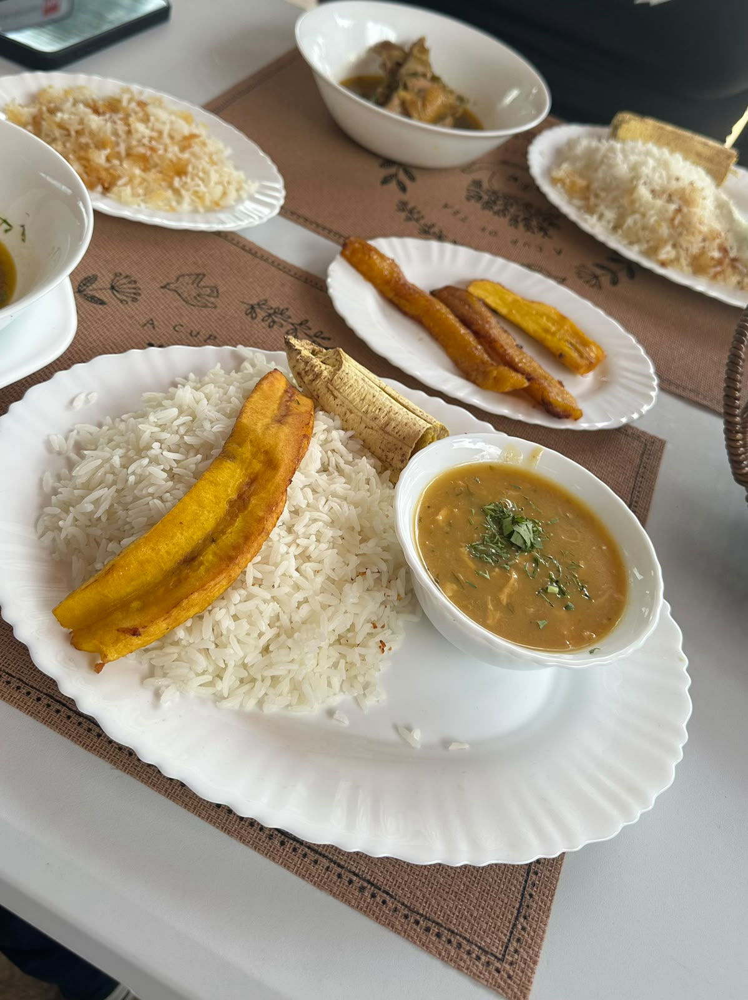
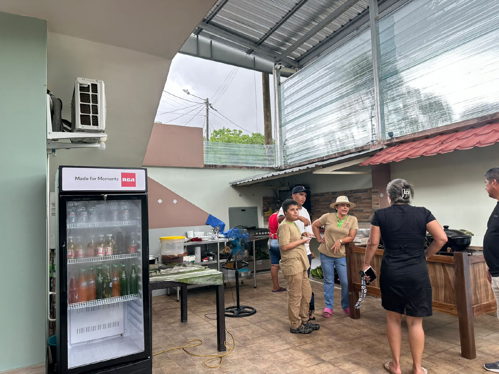
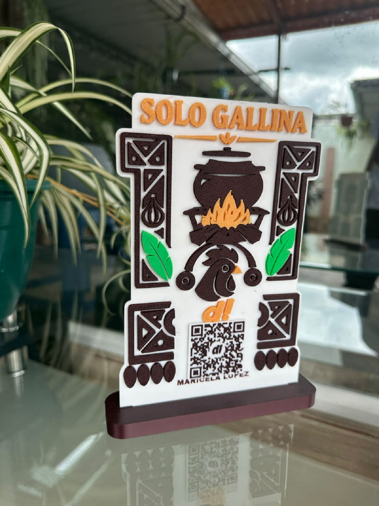
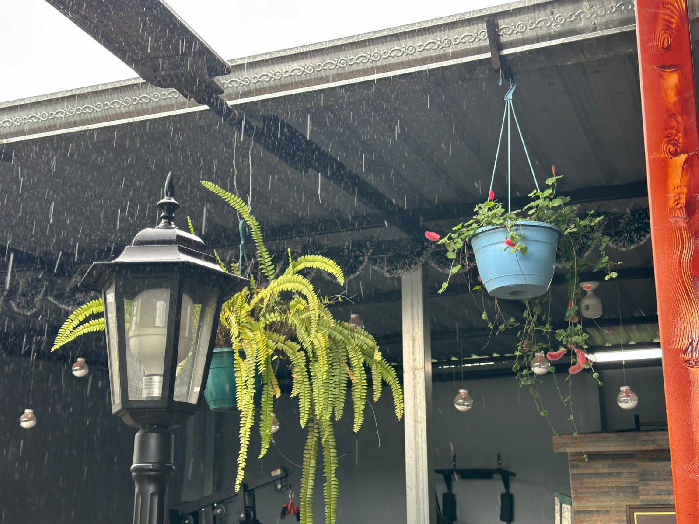

La gallina
Gallina criolla, de carne firme y sabor de verdad. Por eso nos llamamos así.
El Carmen, Manabí · Sábados y feriados
Caldo, seco y tongas hechos como en el campo manabita: gallina criolla, olla de barro y fuego de leña, sin apuros. Ven con hambre y sal con ganas de volver.

La carta
Aquí se cocina una sola cosa: gallina criolla. Lo que cambia es la forma de servirla. Pregunta por WhatsApp qué hay hoy y el precio del día.
La presa entera en un caldo dorado y bien sustancioso, con hierbas frescas. El que levanta a cualquiera.
Gallina guisada despacio en su salsa, con arroz suelto y maduro frito al lado. El plato fuerte de la casa.
Arroz, gallina y maduro envueltos en hoja de bijao: el almuerzo de campo que se abre en la mesa todavía humeante.
Arroz blanco, maduro frito y verde asado para acompañar. Y bebidas frías para el calor de Manabí.

El fogón
Gallina criolla, de carne firme y sabor de verdad. Por eso nos llamamos así.
Cebolla, ajo, ajíes y hierbas del monte: la sazón manabita de siempre.
La olla de barro sobre el fogón de leña hace lo suyo, despacito.
Bien caliente, con arroz y maduro, para compartir en familia.
El lugar
Mesas al aire libre, plantas colgando y la cocina abierta para que veas cómo se prepara todo. Llueva o haga sol, aquí se come tranquilo.



“Seco, caldo de gallina criolla y tongas en leña y barro.”
Visítanos
Abrimos sábados y feriados al mediodía. Las porciones vuelan, así que escríbenos antes para separar tu mesa o tu pedido.